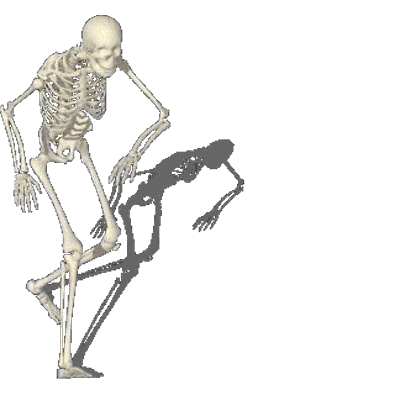
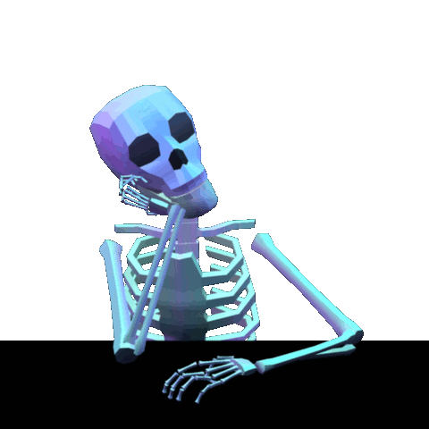
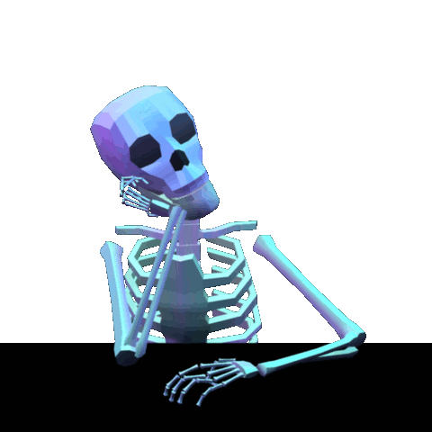

CSS (Hojas de Estilo en Cascada) es el código que usas para dar estilo a tu página web. CSS Básico te lleva a través de lo que tú necesitas para empezar. Contestará a preguntas del tipo: ¿Cómo hago mi texto rojo o negro? ¿Cómo hago que mi contenido se muestre en tal y tal lugar de la pantalla? ¿Cómo decoro mi página web con imágenes de fondo y colores?
Entonces ¿qué es CSS, realmente? Como HTML, CSS (Cascading Style Sheets) u Hojas de estilo en cascada en español, no es realmente un lenguaje de programación, tampoco es un lenguaje de marcado. Es un lenguaje de hojas de estilo, es decir, te permite aplicar estilos de manera selectiva a elementos en documentos HTML. Por ejemplo, para seleccionar todos los elementos de párrafo en una página HTML y volver el texto dentro de ellos de color rojo, has de escribir este CSS:
Entonces ¿qué es CSS, realmente? Como HTML, CSS (Cascading Style Sheets) u Hojas de estilo en cascada en español, no es realmente un lenguaje de programación, tampoco es un lenguaje de marcado. Es un lenguaje de hojas de estilo, es decir, te permite aplicar estilos de manera selectiva a elementos en documentos HTML. Por ejemplo, para seleccionar todos los elementos de párrafo en una página HTML y volver el texto dentro de ellos de color rojo, has de escribir este CSS:
 
